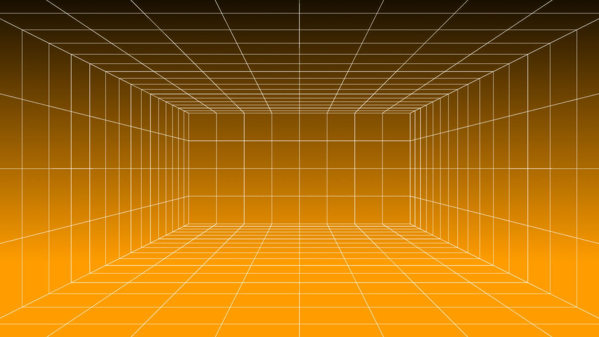
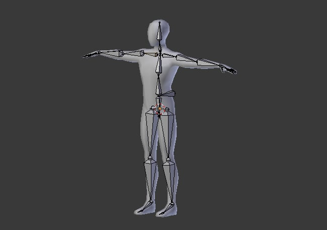
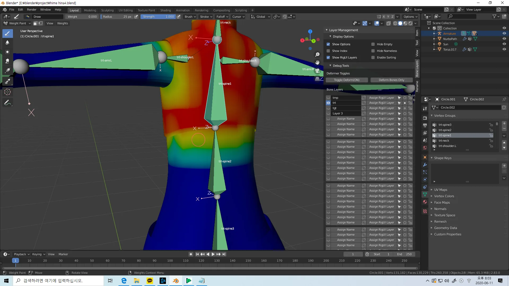

День 3 - Подготовка меша, скелет и Weight Paint
Сегодня подготовка модели к анимации: проверка меша, создание арматуры, привязка к костям и исправление деформаций через веса.
Видеоурок
▶

Подготовка меша
- проверь простоту и читаемость формы
- для каждого объекта: Ctrl + A → All Transforms
- проверь origin: Origin to Geometry при необходимости
- убедись, что масштаб модели адекватный
Создание арматуры
- Shift + A → Armature → Single Bone
- Включи In Front в Object Data
- Tab в Edit Mode арматуры
- Построй кости: позвоночник, голова, руки, ноги
Привязка модели к скелету
- Выдели части модели
- Shift + клик по арматуре (последней)
- Ctrl + P → With Automatic Weights

Проверка в Pose Mode
- выдели арматуру, включи Pose Mode
- выбери кость и вращай (R)
- проверь, что меш движется вместе с костями
Weight Paint
- красный - сильное влияние кости, синий - нет
- исправляй явные ошибки: руки не тянут корпус и т.д.
- Add - добавить вес, Subtract - убрать
- на этом этапе не нужен идеальный результат

Итог дня
- есть персонаж со скелетом
- есть рабочая привязка модели к костям
- есть базовый опыт исправления деформаций
Суть урока
На этом этапе ты подготавливаешь модель к анимации.
- проверка и упрощение меша
- создание скелета (арматуры)
- привязка модели к костям
- исправление деформаций через веса
В конце урока персонаж уже должен двигаться, даже если не идеально.
Подготовка меша (важно)
Проверка структуры
- модель не должна быть слишком сложной
- форма должна быть читаемой
- несколько объектов — это нормально
Применение трансформаций
Для каждого объекта:
- Ctrl + A
- All Transforms
Это фиксирует масштаб, поворот и позицию.
Центр объекта
- Object → Set Origin → Origin to Geometry
Проверка масштаба
- модель не должна быть слишком маленькой
- и не слишком большой
Создание скелета (Armature)
Добавление арматуры
- Shift + A
- Armature → Single Bone
Видимость сквозь модель
- Object Data Properties → In Front
Edit Mode
- Tab → редактирование костей
Построение скелета
- позвоночник
- голова
- руки
- ноги
Создание костей: E (Extrude)
Привязка к скелету
- Выдели модель
- Shift + клик арматура
- Ctrl + P
- With Automatic Weights
Проверка
- Pose Mode
- Выбор кости
- R → вращение
Если всё правильно — модель движется вместе со скелетом.
Проблемы
- деформации — это нормально
- геометрия может ломаться
- это исправляется весами
Weight Paint
Суть
- красный — сильное влияние
- синий — отсутствует влияние
Как работать
- выбери меш
- Weight Paint Mode
- выбери кость
- рисуй влияние
Инструменты
- Add — увеличить влияние
- Subtract — уменьшить
Что исправлять
- руки не должны тянуть корпус
- ноги не должны влиять на верх
- голова должна быть изолирована
Упрощение
Не нужно идеального результата. Главное — убрать явные ошибки.
Задание
- Ctrl + A для всех объектов
- создать арматуру
- построить базовый скелет
- Ctrl + P → Automatic Weights
- проверить в Pose Mode
- исправить весами основные проблемы
Итог
- есть скелет персонажа
- модель привязана к костям
- базовая деформация работает
- есть понимание weight paint